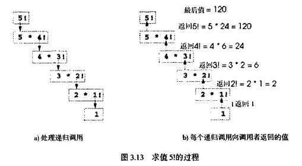

前面介绍的程序通常由严格按层次方式调用的函数组成。对有些问题，可以用自己调用自己的函数。递归函数(recursive function)是直接调用自己或通过另一函数间接调用自己的函数。递归是个重要问题，在高级计算机科学教程中都会详细介绍。本节和下节介绍一些简单递归例子，本书则包含大量递归处理。图3.17(3．14节末尾)总结了本书的递归例子和练习。
我们先介绍递归概念，然后再介绍几个包含递归函数的程序。递归问题的解决方法有许多相同之处。调用递归函数解决问题时，函数实际上只知道如何解决最简单的情况(称为基本情况)。对基本情况的函数调用只是简单地返回一个结果。如果在更复杂的问题中调用函数，则函数将问题分成两个概念性部分：函数中能够处理的部分和函数中不能够处理的部分。为了进行递归，后者要模拟原问题，但稍作简化或缩小。由于这个新问题与原问题相似，因此函数启动(调用)自己的最新副本来处理这个较小的问题，称为递归调用(reeursive call)或递归步骤(reeursive step)。递归步聚还包括关键字return，因为其结果与函数中需要处理的部分组合，形成的结果返回原调用者(可能是main)。递归步骤在原函数调用仍然打开时执行，即原调用还没有完成。
递归步骤可能导致更多递归调用，因为函数-继续把函数调用的新的子问题分解为两个概念性部分。要让递归最终停止，每次函数调用时都使问题进一步简化，从而产生越来越小的问题．最终合并到基本情况。这时，函数能识别并处理这个基本情况，并向前一个函数副本返回结果，并回溯一系列结果，直到原函数调用最终把最后结果返回给main。这一切比起前面介绍的其他问题似乎相当复杂．下面通过一个例子来说明。我们用递归程序进行一个著名的数学计算。
非负整数n的阶乘写成n!,为下列数的积：
n*(n—1)·(n—2)*...*l
其中1，等于1, 0定义为1。例如，51为5*4*3*2*1．即120。
整数number大于或等于0时的阶乘可以用下列for循环迭代(非递归)计算：
factorial = l；
for { int counter = number；counter >= 1；counter-- )
factorial *= counter；
通过下列关系可以得到阶乘函数的递归定义：
n!=n*(n-1)!
例如，5!等于5*4!，如下所示：
5!＝5*4*3*2*l 5!=5*(4*3*2*1) 5!=5*(4!)
求值5!的过程如图3．13。图3．13 a)显示如何递归调用，直到1!求值为1，递归终止。图3.13 b)显示每次递归调用向调用者返回的值，直到计算和返回最后值。

图3．14的程序用递归法计算并打印。到10的整数阶乘(稍后将介绍数据类型unsigned long的选择)。递归函数factorial首先测试终止条件是否为true，即number是否小于或等于1。如果number小于或等于1，则factorial返回1，不再继续递归，程序终止。如果number大于1，则下列语句。
return number *factorial( number - 1 )；
将问题表示为number乘以递归调用dactorial求值的number-1的阶乘。注意factorial(number-1)比原先factorial(number)的计算稍微简单一些。
// Fig. 3.14:fig03 14.cpp // Recursive factorial function #include<iostream.h>输出结果：
#include<iomanip.h>unsigned long factorial( unsigned long ); int main( ) { for ( iht i = O; i <= 10: i++ ) cout << setw( 2) << 1 << "! = "<< factorial( i ) << endl; return 0; } // Recursive definition of function factorial unsigned long factorial( unsigned long number ) { if ( number <= 1 ) // base case return 1; else // recursive case return number * factorial( number - 1 ); }
O! = 1 1! = 1 2! = 2 3! = 6 4! = 24 5! = 120 6! = 720 7! = 5040 8! = 40320 9! = 362880 lO!= 3628800
函数factorial声明为接收unsigned long类型的参数和返回unsigned long类型的值。unsigned long是unsigned long int的缩写，C++语言的规则要求存放unsigned long int类型变量至少占用4个字节(32位)，因此可以取0到4294967291之间的值(数据类型long int至少占内存中的4个字节，可以取±2147483647之间的值)。如图3．14，阶乘值很快就变得很大。我们选择unsigned long数据类型，使程序可以在字长为16位的计算机上计算大于7!的阶乘。但是，factorial函数很快产生很大的值，即使unsigned long也只能打印少量阶乘值，然后就会超过unsigned long变量的长度。
练习中将会介绍，用户最终可能要用float和double类型来计算大数的阶乘,这就指出了大多数编程语言的弱点，即不能方便地扩展成处理不同应用程序的特殊要求。从本书面向对象编程部分可以看到，C++是个可扩展语言，可以在需要时生成任意大的数。
递归函数中需要返回数值时不返回数值将使大多数编译器产生一个警告消息。
省略基本情况或将递归步骤错误地写成不能回推到基本情况会导致无穷递归，最终内存用尽。这就像迭代(非递归)解决方案中的无限循环问题。意外输入也可能导致无穷递归。
Fibonacci数列(斐波纳契数列)：
0，1，1，2，3，5，8，13, 21， ．．．
以0和1开头．后续每个Fibonaeei数是前面两个Fibonacci数的和。
自然界中就有这种数列,描述一种螺线形状。相邻Fibonacci数的比是一个常量1.618…,这个 数在自然界中经常出现，称为黄金分割(golden ratio或golden mean)。人们发现，黄金分割会产生最佳的欣赏效果。因此建筑师通常把窗户、房子和大楼的长和宽的比例设置为黄金分割数，明信片的长宽比也采用黄金分割数。Fibonacci数列可以递归定义如下：
fibonacci(O)=O
fibonacci(1)=l
fibonacci(n)= fibonacci{n-1)+ fibonacci(n-2)
图3．15的程序用函数fibonaoci递归计算第i个Fibonacci数。注意Fibonacci数很快也会变得很大，因此把Fibonacci函数的参数和返回值类型设为unsigned long数据类型。图3．11中每对输出行显示运行一次程序的结果。
输出结果如下：
Enter an integer: 0 Fibonacci(0) = 0 Enter an integer: 1 Fibonacci(1) = 1 Enter an integer: 2 Flbonacci(2) - 1 Enter an integer: 3 Fibonacci(3) - 2 Enter an integer: 4 Fibonacci(4) = 3 Enter an integer: 5 Fibonacci(5) = 5 Enter an integer: 6 Fibonacci(6) = 8 Enter an integer: 10 Fibonacci(10) = 55 Enter an integer: 20 Fibonacci(20) = 6765 Enter an integer: 30 Fibonacci(30) = 832040 Enter an integer: 35 Fibonacci(35) = 9227465
图 3．15递归计算Fibonacci数列
main中调用fibonacci函数不是递归调用，但后续所有调用fibonacci函数都是递归调用。每次调用fibonacci时．它立即测试基本情况(n等于0或1)。如果是基本情况，则返回n。有趣的是，如果n大于1，则递归步骤产生两个递归调用，各解决原先调用fibonacci问题的一个简化问题。图9．16显示了fibonacci函数如何求值fibonacci(3)，我们将fibonacci缩写成f。
图中提出了C++编译器对运算符操作数求值时的一些有趣的顺序问题。这个问题与运算符作用于操作数的顺序不同，后者的顺序是由运算符优先级规则确定的。图3．16中显示，求值f(3)时，进行两个递归调用，即f(2)和f(1)。但这些调用的顺序如何呢
大多数程序员认为操作数从左向右求值。奇怪的是，C++语言没有指定大多数运算符的操作数求值顺序(包括+)，因此，程序员不能假设这些调用的顺序。调用可能先执行f(2)再执行f(1)，也可能先执行f(1)再执行f(2)在该程序和大多数其他程序中，最终结果都是相同的。但在有些程序中，操作数求值顺序的副作用可能影响表达式的最终结果。
C++语言只指定四种运算符的操作数求值顺序，即 "&&"、"||"、逗号运算符(，)和“ ：”。前三种是二元运算符，操作数从左向右求值。第四种是C++惟一的三元运算符，先求值最左边的操作数，如果最左边的操作数为非0，则求值中间的操作数，忽略最后的操作数；如果最左边的操作数为0，则求值最后的操作数，忽略中间的操作数。
对于除“ &&”、"||"、逗号运算符(,)和" ："以外的运算符，如果在编写程序中依赖该运算符择作数的求值顺序，则会导致错误，因为编译器不一定按程序员希望的顺序求值操作数。
对于除” &&”、"||"、逗号运算符(,)和" ："以外的运算符，如果在程序中依赖该运算符操作数的求值顺序，则不同系统和不同编译器中的结果不同。
要注意这类程序中产生Fibonacci数的顺序。Fibonacci函数中的每一层递归对调用数有加倍的效果，即第n个Fibonaeci数在第2n次递归调用中计算。计算第20个Fibonacci数就要220次，即上百万次调用，而计算第30个Fibonacci数就要230次，即几十亿次调用。计算机科学家称这种现象为指数复杂性(exponential complexity)，这种问题能让最强大的计算机望而生畏。一般复杂性问题和指数复杂性将在高级计算机科学课程“算法”中详细介绍。
前面几节介绍了两个可以方便地用递归与迭代实现的函数。本节要比较递归与迭代方法，介绍为什么程序员在不同情况下选择不同方法。
递归与迭代都是基于控制结构：迭代用重复结构，而递归用选择结构。递归与迭代都涉及重复：迭代显式使用重复结构，而递归通过重复函数调用实现重复。递归与迭代都涉及终止测试：迭代在循环条件失败时终止，递归在遇到基本情况时终止。使用计数器控制重复的迭代和递归都逐渐到达终止点：迭代一直修改计数器，直到计数器值使循环条件失败；递归不断产生最初问题的简化副本，直到达到基本情况。迭代和递归过程都可以无限进行：如果循环条件测试永远不变成false，则迭代发生无限循环；如果递归永远无法回推到基本情况，则发生无穷递归。
递归有许多缺点，它重复调用机制，因此重复函数调用的开销很大，将占用很长的处理器时间和大量的内存空间。每次递归调用都要生成函数的另一个副本(实际上只是函数变量的另一个副本)．从而消耗大量内存空间。迭代通常发生在函数内，因此没有重复调用函数和多余内存赋值的开销。那么，为什么选择递归呢
任何能用递归解决的问题也能用迭代(非递归)方法解决。递归方法优于迭代方法之处在于能更自然地反映问题，使程序更容易理解和调试。选择递归方法的另一个原因是可能没有明显的迭代方案。
在要求性能的情况下不要用递归方法。递归调用既花时间又占用更多的内存。
让非递归函数直接或通过另一函数间接调用自己是个逻辑错误。
大多数有关编程的教材都把递归放在后面再讲。我们认为递归问题比较复杂而且内容丰富，应放在前面介绍，本书余下部分会通过更多例子加以说明。图3.17总结了本书使用递归算法的例子和练习。
下面重新考虑书中重复强调的一些观点。良好的软件工程很重要，高性能也很重要，但是，这些目标常常是互相矛盾的。良好的软件工程是使开发的大型复杂的软件系统更容易管理的关键，面高性能是今后在硬件上增加计算需求时实现系统的关键，这两个方面如何取得折衷
让程序以整齐有序的层次方式工作能提高软件工程质量，但这是有代价的。
功能化的程序(而不是没有函数的一个整体的程序)造成更多的函数调用，需要占用执行时间和计算机处理器空间。但作为一个整体的程序难以编程、测试、调试、维护和改进。
因此要使程序合理地功能化，应该一直保持性能与良好的软件工程之间的平衡。
-----------------------------------------------------------------------
章号 使用递归算法的例子和练习
-----------------------------------------------------------------------
第3章
阶乘函数
Fbonacci函数
最大公约数
两个整数和
两个整数积
一个整数的整数次幂
汉诺塔
逆向打印键盘输入
第4章
图形化递归
第4章
数组元素求和
打印数组
逆向打印数组
逆向打印字符串
检查字符串是否为回文
选择数组中的最小值
选择排序
八皇后
线性查找
折半查找
第5章
快速排序
走迷宫
逆向打印键盘输入字符串
第15章
链表插入
链表删除
链表搜索
逆向打印链表
二又树插入
二又树前序遍历
二又树中序遍历
二又树后序遍历
-------------------------------------------------------------------------
图317 本书使用递归算法的例子和练习